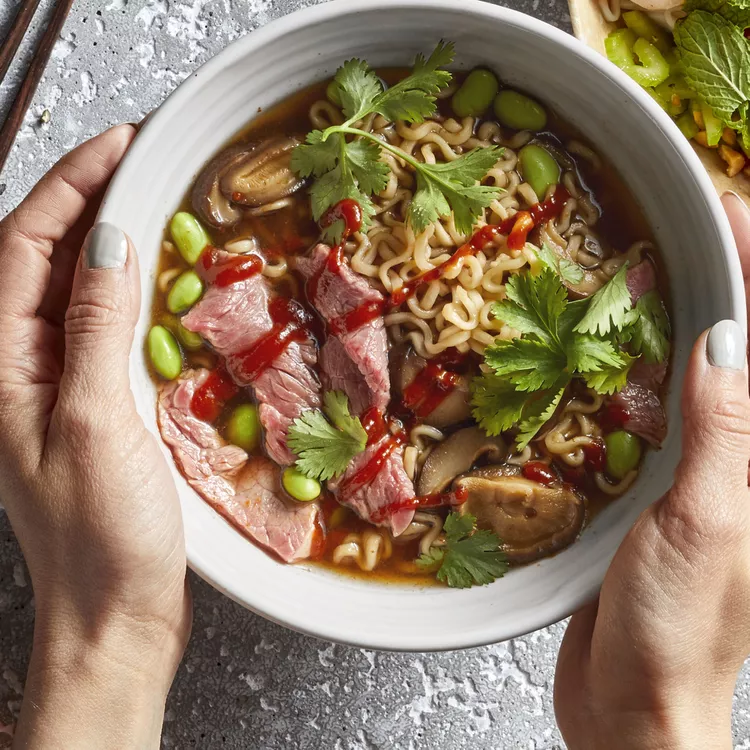

Spicy Beef Ramen

Description
For this spicy beef ramen recipe, if you partially freeze the steak, it will be a breeze to thinly slice. Then it'll need just a minute or two in boiling water for medium-rare. Garnish with bias-sliced green onions if preferred.
Ingredients
- 2 cups water
- 1 (3 ounce) package beef-flavored ramen noodles with seasoning packet
- 1 cup thinly sliced shiitake mushrooms
- ½ cup frozen shelled edamame
- 1 tablespoon reduced-sodium soy sauce
- 2 teaspoons Sriracha sauce, or more to taste
- 4 ouncesbeef top sirloin, thinly sliced
- 1 tablespoon chopped fresh cilantro, or to taste
Steps
- Bring water to a boil in a saucepan. Add ramen and seasoning packet; cook and stir for 1 minute. Add mushrooms, edamame, soy sauce, and Sriracha; cook for 1 more minute.
- Add steak and cook until firm and reddish-pink and juicy in the center, 1 to 2 more minutes. An instant-read thermometer inserted into the steak should read 130 degrees F (54 degrees C) for medium-rare.
- Ladle soup into bowls. Garnish with cilantro and add additional Sriracha if desired.